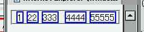
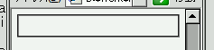
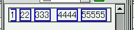

あるウィンドウ幅のもとでは white-space:nowrap; を指定した要素内の一部または全体が表示されなくなる。ただし、この現象がおきるウィンドウ幅は要素の内容物の量によって異なる。
<style type="text/css">
div.a {
white-space: nowrap;
}
div.a span {
margin-left: 5px;
border: 2px solid blue;
}
</style>
<div class="a">
<span>1</span><span>22</span><span>333</span>
<span>4444</span><span>55555</span>
</div>
Moz1.0での表示（標準モード）
WinIE6.0で完全に消えたとき（標準モード）
WinIE6.0で左端だけが消えている状態（標準モード）
nowrap指定された要素の子孫にボーダーやマージンが指定された要素が存在するときにバグの発生率が高くなります。
この現象は、white-space: nowrap; という記述を外すことで回避できます。
WinIE6.0では標準・互換モードともに不具合の発生が確認されました。